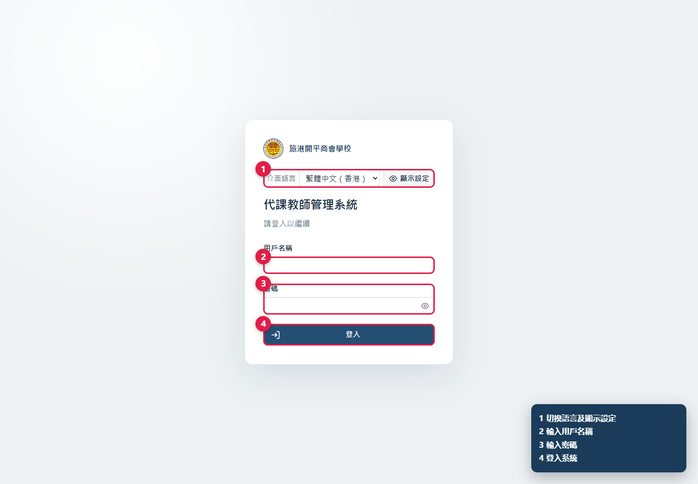
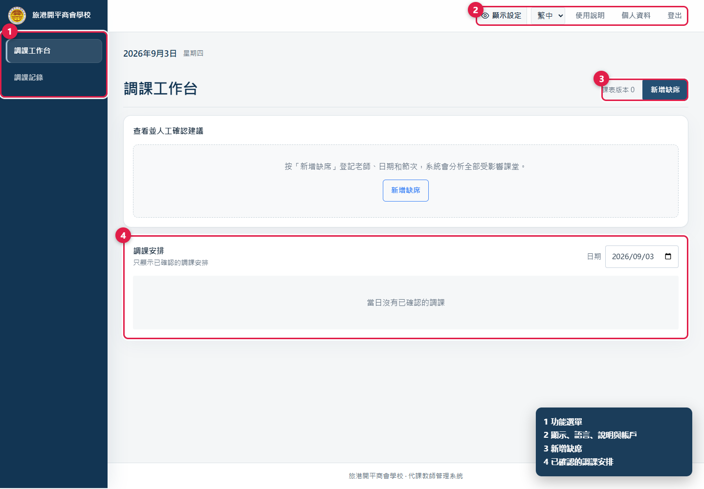
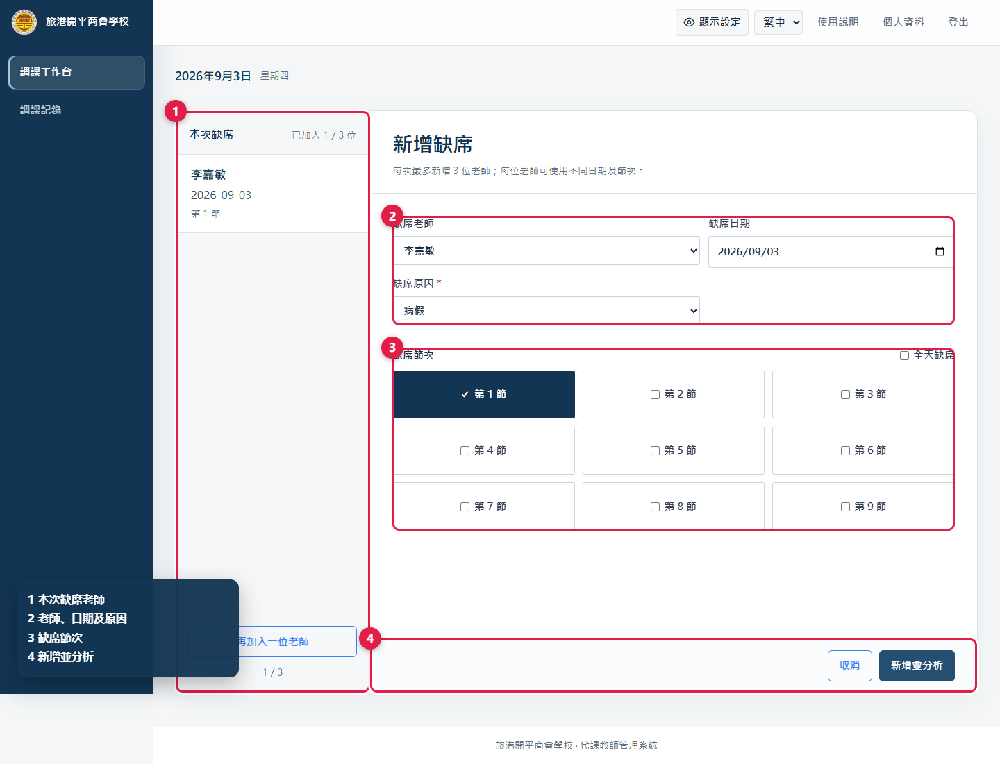
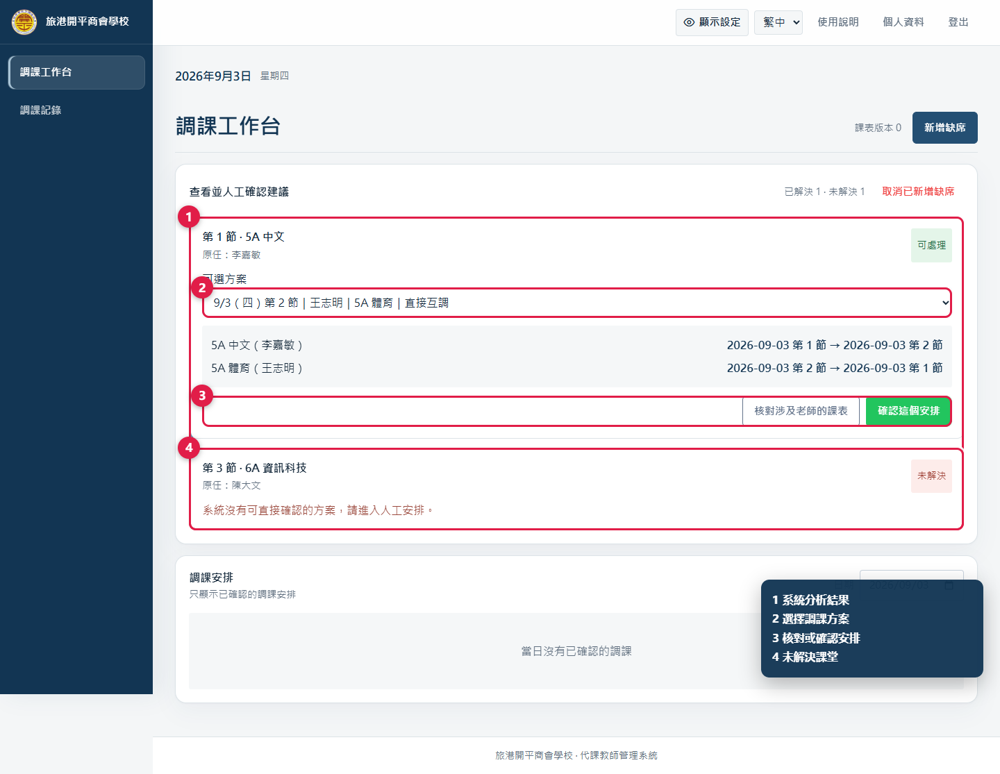
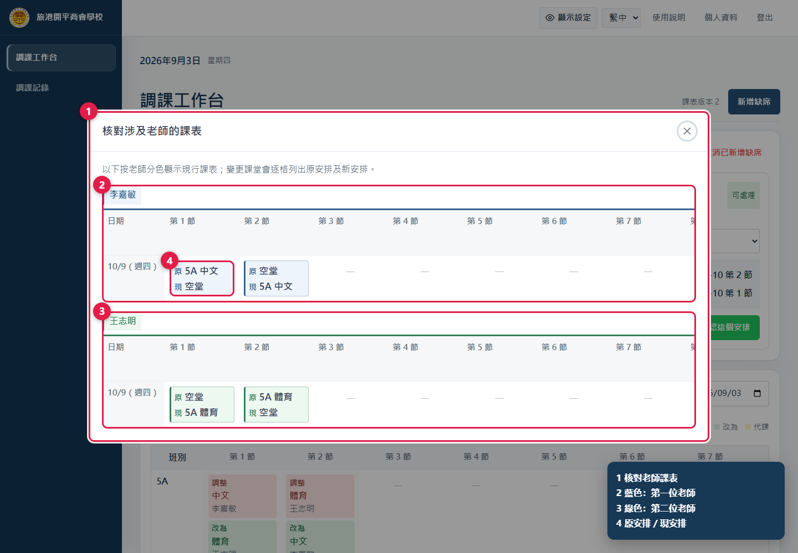
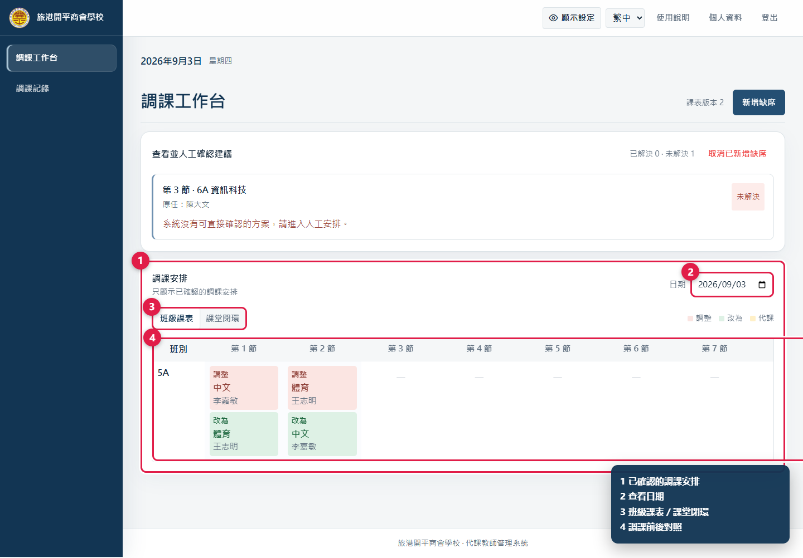
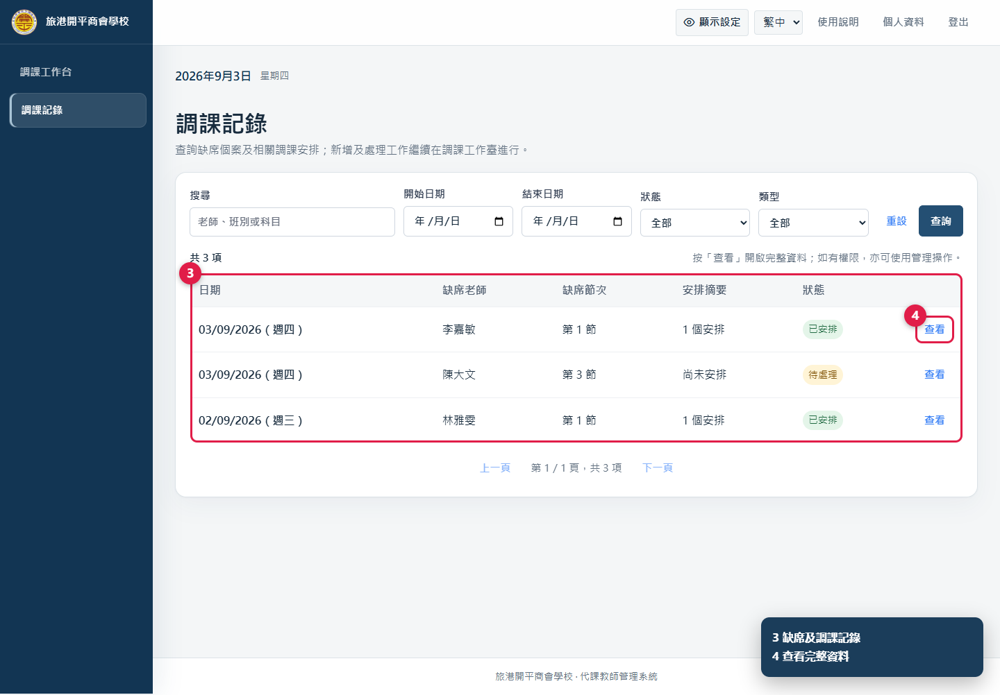
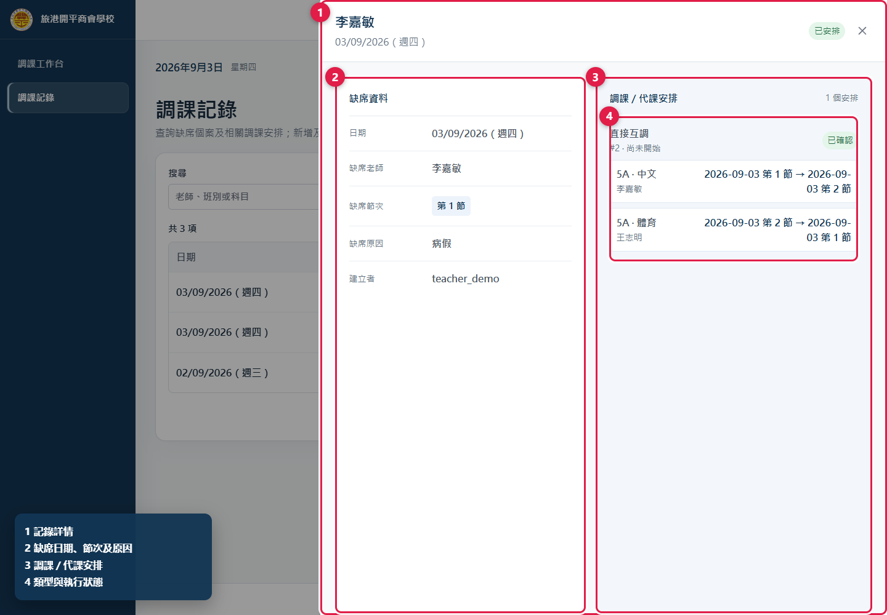
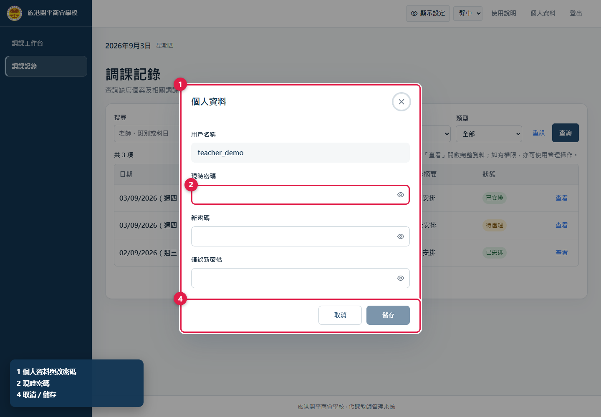

適用對象：使用普通用戶帳號的教職員
介面語言：繁體中文（香港）／English
更新日期：2026 年 9 月 1 日
圖中的紅框及圓形數字是操作位置，角落圖例說明各標註用途。所有畫面均使用示例資料。
日常處理一宗缺席，可按以下次序：
如看不到某個頁面或按鈕，通常表示帳號未獲該項權限，請聯絡管理員，不要借用其他人的帳號。

圖 1 選擇語言、輸入用戶名稱和密碼後登入。
多次輸入錯誤時，系統會暫停登入並顯示等候時間。請等倒數完成後再試。

圖 2 左側是獲授權的功能；右上方可調整顯示、開啟本說明及管理帳戶。
顯示設定只保存在目前的瀏覽器，不會改變 Excel 或 PDF。手機版請先按右上角選單按鈕，再選擇功能。
管理員可按工作需要分配以下權限：
| 權限 | 可做的事 |
|---|---|
| 查看調課工作台 | 查看老師、缺席、有效課表及停課日資料 |
| 新增缺席 | 建立及分析缺席；更新自己建立而尚未鎖定的個案 |
| 確認系統建議 | 確認系統產生的調課或代課方案 |
| 人工安排 | 指定代課老師或確認由共同教師繼續上課 |
| 查看調課記錄 | 搜尋及查看記錄詳情 |
| 管理調課記錄 | 修改、撤銷或刪除同校記錄 |
| 查看統計 | 查看所選日期範圍的教師統計 |
| 下載每日表格 | 下載每日 Excel 或單一 PDF |
| 上傳及預覽課表 | 上傳課表及處理差異覆核 |
| 啟用及管理課表 | 啟用、改期或刪除課表版本 |
系統會自動維持所需的上層權限，例如「新增缺席」必須同時能查看工作台；「管理調課記錄」必須同時能查看記錄。

圖 3 左側管理本次老師清單；右側填寫老師、日期、原因及節次。
只有日期已有生效課表，而且老師、原因及至少一個節次已選擇時，「新增並分析」才可使用。只勾選老師實際有課而需要處理的節次；空堂不會建立需要安排的課堂。試後日期的 5 節時間依次為 08:25–09:15、09:15–10:05、10:25–11:15、11:15–12:05、12:25–13:00。
如該老師同一天已有缺席個案，新操作只會追加尚未登記的節次：
如本批記錄尚未確認任何安排，可按「取消已新增缺席」。一旦已有已確認安排，系統會拒絕整批取消，應由具「管理調課記錄」權限的人員處理。

圖 4 每堂課會顯示可選方案、完整調動路徑，以及核對和確認按鈕。
每張課堂卡片會顯示節次、班別、科目、原任老師和狀態：
系統預先選中的方案只是建議。確認前必須閱讀每一段「原日期／節次 → 新日期／節次」，並留意跨日、連鎖或特殊課程提示。

圖 5 不同顏色區分老師；變更格並列原安排與現安排。
核對無誤後按「確認這個安排」。系統會更新有效課表、寫入調課記錄，並用最新課表重新分析尚未處理的課堂。若系統提示課表已被其他人修改，請重新載入和核對，不要重複提交舊方案。
如所有候選都不合適，可轉到「人工安排」。沒有人工安排權限時，請把日期、節次、班別及科目交給獲授權人員。

圖 6 按日期查看已確認安排，可切換班級課表或課堂閉環。
有效課表是系統處理後的最新事實。如一堂已被移動的課後來遇到老師缺席，系統只修復受影響的局部鏈路，不會重做其他無關安排；處理後仍應再次核對當日課表。

圖 7 可按搜尋字、日期、狀態和類型篩選記錄。

圖 8 詳情列出缺席原因、安排路徑和執行狀態。
| 狀態 | 含義 |
|---|---|
| 待處理 | 仍有受影響課堂未完成安排 |
| 已安排 | 所需安排已確認 |
| 需覆核 | 課表或資料變動後需要重新核對 |
| 尚未開始 | 安排中的課堂尚未到上課時間 |
| 部分完成 | 部分課堂已開始或完成，其他仍在未來 |
| 已完成 | 所有相關課堂時間均已過 |
只有具「管理調課記錄」權限的人員會看到修改、撤銷或刪除操作。同時具「新增缺席」權限時，按鈕會顯示為「重新挑選方案」：撤銷後自動返回工作台，為同一缺席重新分析及選擇。已開始的安排，或已有下游調動依賴的安排，不能直接撤銷；必須先撤銷最新而尚未開始的依賴安排。

圖 9 輸入現時密碼、新密碼和確認密碼後儲存。
使用完畢後按「登出」。在公用電腦上不要讓瀏覽器保存密碼，也不要只關閉分頁代替登出。
.xls 和教師
.xlsx，處理差異並管理版本。這是高影響操作，應依學校安排使用。日期不在任何生效課表版本內。先核對日期；如日期正確，請管理員檢查課表版本。
現有課表和規則下沒有合適自動方案。交由具人工安排權限的人員處理，不要重複建立相同缺席。
個案已有已確認安排、安排已開始，或它被後續調動依賴。請到記錄詳情查看狀態，並由獲授權人員按最新依賴順序處理。
功能由權限控制。重新整理後仍沒有顯示，請管理員檢查帳號權限。
先檢查網絡並重新整理。問題持續時，向管理員提供發生時間、缺席日期／節次、班別／科目及完整錯誤訊息；不要提供密碼。